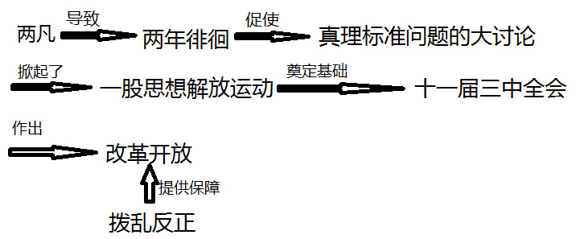

一单元
Made In Revival_Society WEB：www.revival-society.org.cn Main Production Members:TianYeORG
Product ID:0x520x53-484849-0x14012 Product ID issuing unit / personnel：KING Publication time：2022y/6m/12d
第一课 中华人民共和国成立
中国人民政治协商会议
概况：
- 全称：中国人民政治协商会议第一届全体会议
- 时间：1949年9月
- 地点：北平
- 目的：讨论成立新中国的问题
内容：
- 会议决定成立中华人民共和国，通过了《中国人民政治协商会议共同纲领》
- 中国人民政治协商会议暂时代行将来召开的全国人民代表大会的职权（政治协商会议的职能）
- 《中国人民政治协商会议共同纲领》起临时宪法作用（《中国人民政治协商会议共同纲领》的地位）
- 会议选举了中央人民政府委员会，毛泽东当选人民政府主席
- 会议决定将北平改名北京，作为新中国的首都；以《义勇军进行曲》为代国歌；以五星红旗为国旗；采用公元纪年
- 会议决定在天安门广场修建人民英雄纪念碑，以表示对革命先烈的崇敬和缅怀
意义：
- 中国人民政治协商会议的成功召开，标志着中国共产党领导的多党合作和政治协商制度的正式确立
开国大典
概况：
- 时间：1949年10月1日下午3点
内容：
- 毛泽东向全世界庄严宣告：“中华人民共和国中央人民政府今天成立了！”
- 盛大的阅兵式
- 盛大的群众游行
意义：
- 中华人民共和国的成立，开辟了中国历史的新纪元。中国人民经过一百多年的英勇斗争，终于推翻了帝国主义，封建主义和官僚资本主义的统治；中国真正的成为独立自主的国家，占人类总数四分之一的中国人从此站起来了。新中国的成立，壮大了世界和平民主和社会主义的力量
新纪元新在哪里?:
- 社会性质的变化;人民政治地位的提高,中国人民实现了翻身解放、当家做主;国际地位的提高
西藏和平解放
概况：
- 时间：1951年
- 人物：阿沛●阿旺晋美
- 方式：一面向西藏进军，一面力争和平解放西藏
标志：
- 双方经过充分协商谈判，达成《中央人民政府和西藏地方政府关于和平解放西藏办法的协议》，西藏和平解放
意义：
- 至此，祖国大陆获得统一，各民族人民实现了大团结。同年人民解放军进驻拉萨，受到西藏各界的热烈欢迎
例题：
中国人民政治协商会议为新中国成立作了哪些准备？
- 通过了《中国人民政治协商会议共同纲领》+内容+意义
结合《开国大典》《建国大业》等影片，谈谈你对中华人民共和国成立让“中国人从此站起来了”的理解
- 中共领导中国人民英勇奋斗，终于摆脱了被压迫被奴役的命运，实现了民族独立，人民当家做主，可以按照自己的意志去建设国家，中国历史从此开辟了一个新时代
第二课 抗美援朝
抗美援朝战争
时间：1950-1953
背景：
- 我国安全面临严重威胁(我国东北边境地区遭到轰炸,美国派遣第七舰队入侵台湾海峡)
- 1950年6月25日，朝鲜内战爆发
- 美国政府作出武装干涉朝鲜内政决定
- 朝鲜政府请求中国出兵
概况：
- 我国司令：彭德怀
- 我国军队名称：中国人民志愿军
- 美利坚司令：麦克阿瑟
口号/目的：
- 抗美援朝，保家卫国
过程：
- 中国人民志愿军同朝鲜军民并肩作战，连续发动五次大规模战役，把美国侵略军赶回到三八线附近
意义：
- 伟大的抗美援朝战争，抵御了帝国主义侵略扩张，捍卫了新中国的安全，保卫了中国人民和平生活；稳定了朝鲜半岛局势，维护了亚洲和世界和平，大大提高了我国的国际地位。抗美援朝战争伟大胜利，是中国人民站起来后屹立世界于世界东方的宣言书，是中华民族走向伟大复兴的重要里程碑。
英雄事迹
黄继光：
- 黄继光是上甘岭战役的一位战斗英雄。在一次战斗中，黄继光用胸膛堵住敌人的机枪口，为队友开辟了前进的道路，自己英勇牺牲
邱少云：
- 为了保证战斗的胜利和潜伏队友的安全，邱少云严守潜伏纪律，纹丝不动，直至被大火吞噬，壮烈牺牲
抗美援朝精神：
- 中国人民志愿军在抗美援朝战争中，发扬高度的爱国主义，革命英雄主义，革命乐观主义，革命忠诚和国际主义精神，锻造了伟大的抗美援朝精神
最可爱的人是？：
- 中国人民志愿军
例题：
中国人民志愿军为什么被称为最可爱的人？
- 中国人民志愿军在抗美援朝战争中，发扬了+精神,赢得了这场反侵略战争的胜利，所以被称为最可爱的人
####
第三课 土地改革
《中华人民共和国土地改革法》的实施
背景/原因：
- 新中国成立时还有占全国人口一多半的新解放区尚未完成土地改革
- 地主人均占有耕地为贫农的二三十倍，农村存在着大量无地和少地的农民。这种情况严重阻碍农村经济和中国社会的发展。
- 广大人民迫切要求进行土地改革，获得土地
开始标志：
- 1950年，中央人民政府颁布《中华人民共和国土地改革法》
内容:
- 它规定废除地主阶级封建剥削的土地所有制，实行农民土地所有制，注意保存富农经济
结果：
- 到1952年底，除部分民族地区外，全国大陆基本完成了土地改革。全国约3亿无地少地的农民，分到土地和大量牲畜，农具，房屋等；农民获得真正解放
意义（这是广告:本资料由RS(复兴会)制作！,网站为：www.revival-society.org.cn）：
- 土地改革的完成，彻底摧毁了我国存在2000多年的封建土地制度，消灭了地主阶级；农民翻了身，得到了土地，成为了土地的主人。这使人民政权更加巩固，也大大解放了农村生产力，农业生产获得迅速恢复和发展，为国家的工业化建设准备了条件
例题：
为什么废除封建剥削的土地制度？
- 背景+原因~
中国共产党不同时期的土地政策？
①国共十年对峙时期
“打土豪，分田地”调动反封建的因素，保证了土地革命的胜利，巩固和发展了红色政权。是“工农武装割据”的重要组成部分。
②抗日战争时期
“地主减租减息、农民交租交息”，减轻了地主的封建剥削，改善了农民的物质生活，提高了农民抗日和生产的积极性，同时也有利于联合地主阶级一致抗日。
③解放战争时期
1947 年中共中央颁布《中国土地法大纲》，规定：没收地主土地，废除封建剥削的土地制度，实行耕者有其田的土地制度，按农村人口平均分配土地。随后制定土地改革总路线：依靠贫雇农，团结中农，有步骤有分别地消灭封建性剥削的土地制度，发展农业生产。翻身农民积极发展生产和支援前线，成为解放战争迅速取得胜利的可靠保证。
④1950 年土地改革
1950 年《中华人民共和国土地改革法》：废除地主阶级封建剥削的土地所有制，实行农民土地所有制，解放农村生产力，发展农业生产，为新中国的工业化开辟道路。 没收地主的土地，分给无地或少地的农民耕种；也分给地主一份土地，让他们自己耕种，在劳动中改造自己；注意保存富农经济，在政治上中立富农。彻底摧毁了封建土地制度，消灭了地主阶级，提高了农民生产生活积极性，巩固的新生的人民政权，为国家工业化建设奠定了基础。
第二单元
第四课 新中国工业化的起步和人民代表大会制度的确立
第一个五年计划
背景：
- 国民经济得到根本好转，工业生产已经超过历史最高水平
- 我国还是一个落后的农业国。我国的工业化水平低，基础薄弱，而且门类不全，许多重要工业产品人均拥有量远远低于发达国家。
- 土地改革完成，抗美援朝胜利，国家政权得到基本巩固
概况：
- 开始时间：1953年
- 结束时间：1957年
- 国家帮助：苏联
友好焦流♂ - 本质：计划经济
目的：
- 为了有计划的进行社会主义建设
基本任务：
- 它的基本任务是:集中主要力量发展重工业，建立国家工业化和国防现代化的初步基；相应的发展交通运输业、轻工业、农业和商业；相应的培养人才；等等。
特点：
- 以重工业为主
- 主要重工业在东北地区
唯一出路：
- 实现工业化
内容：
- 一桥：武汉长江大桥 意义：连接了长江南北的交通
- 二铁：宝成，鹰厦铁路
- 三公：川藏、青藏、新藏公路 意义：密切了祖国内地与边疆地区的联系
- 四厂：鞍山钢铁公司无缝钢管 厂等三大工程、长春第一汽车制造厂、沈阳第一机床厂 和飞机制造厂
结果：
- 到1957年底，第一个五年计划超额完成。
意义：
- 我国开始改变工业落后的面貌，向社会主义工业化迈进
- 为社会主义工业化奠定了基础
人民代表大会制度的确立
概况：
- 地点：北京
- 全称：第一届全国人民代表大会第一次会议
- 时间：1954年9月
- 标志：第一届全国人民代表大会第一次会议在北京召开’
内容：
- 大会通过了《中华人民共和国宪法》
- 选举产生领导人，大会选举毛泽东为中华人民共和国主席，朱德为副主席，刘少奇为第一届全国人民代表大会常务委员会委员长；决定周恩来为国务院总理
意义：
- 为社会主义民主政治建设奠定了基础、颁布了第一部社会主义类型的宪法、选举了新一届中央人民政府、标志着人大制度的确立
人民代表大会地位：
- 人民代表大会制度是我国的根本制度
宪法
宪法的内容：
- 宪法规定，中华人民共和国全国人民代表大会是最高国家权力机关
宪法意义：
- 这就以国家根本法的形式确立了人民代表大会制度
54宪法(1954年宪法)的性质/地位：
- 这是我国第一部社会主义类型的宪法，也是我国有史以来真正反映人民利益的宪法
例题：
谈谈你对人民代表大会的认识
- 意义+地位
谈谈你对两会的认识(这是广告:本资料由RS(复兴会)制作！,网站为：https://revival_society_web.4everland.app/)
- 全国人民代表大会是最高国家权力机关，表明中华人民共和国的一切权力属于人民，中国人民政治协商会议是人民民主统一战线的组织，是中共领导的多党合作和政治协商的重要机构，是中国政治生活中发扬社会主义民主的重要形式
第五课 三大改造（ 注:1953-1957 年是第一个五年计划 1953-1956 年是三大改造）
三大改造
结果：
- 到1956年底，国家基本完成了对农业，手工业，资本主义工商业的社会主义改造，实现了生产资料私有制到社会主义公有制的转变
实质：
- 实现了生产资料私有制到社会主义公有制的转变
意义：
- 社会主义基本制度在我国建立起来。这是中国历史上最深刻的社会变革。我国从此进入社会主义初级阶段
- 实现了生产资料私有制到社会主义公有制的转变
局限性：
- 在社会主义改造工作后期，也存在着要求过急、工作粗糙、改变过快等缺点
农业、手工业合作化
背景/原因：
- 我国农业仍然是一家一户分散经营的
- 影响农业生产的发展，农产品满足不了国家工业化建设的需求
- 农民也有进行互助合作的需求
方式：
- 国家对农业进行社会主义改造，主要是把分散的个体农民组织起来，引导他们参加农业生产合作社，走向集体化和共同富裕的社会主义道路
经过：
- 农业合作化的优越性，促使农民踊跃参加合作社。农业合作化开始实行自愿互利的原则，通过典型示范逐渐推广。他经历了由农业互助组，初级农业生产合作社，高级农业生产合作社三个阶段。
- 1955年全国掀起农业合作化的高潮，第二年全国绝大多数农民参加了农业生产合作社
- 1956年基本完成
手工业合作化经过
- 农业合作化运动（什么运动），推动了手工业的社会主义改造
- 1956年90%的个体手工业者参加了手工业生产合作社
- 1956基本完成
公私合营
概况：
- 时间：1954-1956
- 方式：公私合营（重要）
目的：
- 为使私有制经济过渡到社会主义公有制经济
性质：
- 社会主义改造
政策（创举）：
- 赎买政策
赎买政策的意义：
- 实现了和平过渡，是中国社会主义改造的创举
例题：
三大改造对经济发展的意义是什么？
- 生产资料所有制转变为社会主义公有制
- 生产关系的变革促进了生产力的变革
- 促进了生产力的进一步发展
- 农业工业发展迅速经济逐步增长
社会性质的改变
- 1840 鸦片战争→→→→→半殖民地半封建社会
- 1949 新中国建立→→→→新民主主义
- 1956 三大改造完成→→→社会主义社会
第六课 艰辛探索与建设成（成就和八大一次会议重要）
中共八大第一次会议
概况：
- 时间：1956年
- 地点：北京
- 全称：第八次全国代表大会
- 内容：大会分析了当时国内的主要矛盾，指出党和人民的主要任务是集中力量把我国尽快地从落后的农业国变为先进的工业国。
意义：
- 中共八大以后，中国开始全面的，大规模的社会主义建设
中共八大二次会议
概况：
- 时间：1958
- 内容：中国八大二次会议提出“鼓足干劲，力争上游，多快好省 地建设社会主义”的总路线。接着掀起了“大跃进”的高潮和人民公社化运动。
中共八大二次会议的结果：
- “大跃进”、”人民公社化运动“
大跃进、人民公社化运动的积极影响:
- 总路线反映了人民群众迫切要求改变我国经济落后状况的愿望
大跃进、人民公社化运动的消极影响：
- 急于求成，忽视了客观的经济规律,1959-1961年,我国国民经济发生严重困难
大跃进、人民公社化运动的启示：
- 经济建设要遵循客观经济规律,不要急于求成,生产关系要适应生产力的发展
八字方针调整
时间：
- 1961年初开始实施到1965年基本完成
目的：
- 为了克服困难局面，中共中央开始调整国民经济
方式/八字方针：
- 提出：“调整、巩固、充实、提高”的八字方针
结果：
- 我国经济调整任务基本完成，工农业生产得到恢复和发展，呈现出物价稳定、市场繁荣的新面貌。
文化大革命
概况：
- 时间：20实际60年代中期。1966年夏，文化大革命全面发动起来
- 原因：毛泽东认为党和国家面临着资本主义复辟的危险
- 毛泽东强调：“以阶级斗争为纲”
- 口号:"以阶级斗争为纲"
反革命集团：
- 林彪反革命集团
- 江青反革命集团（四人帮）
结束标志：
- 粉碎江青反革命集团
影响：
- “文化大革命”给党、国家和各名族人民带来新中国成立后最严重的挫折，造成了巨大的损失。
启示：
- 社会主义的历史很短，我们的党对什么是社会主义、怎样建设社会主义没有完全搞清楚，因而在探索中走了弯路。人间没有一帆风顺的失业，世界历史总是在跌宕起伏的曲折过程中前进的
建设成就
内容：
全面的社会主义建设事业开始后（1956-1966）：
（经济）工业生产能力和技术水平大大提高，建成一大批大中型项目。武汉、包头两大钢铁基地，大庆油田、胜利油田和大港油田都是这个时期建设起来的。意义：到了1965年，我国实现了原油和石油产品的全部自给。
（经济）工业布局也有了明显改善，原有的沿海工业基地得到加强，广大内地也新建了不同规模的现代工业
（经济）新兴的电子工业、原子能工业、航天航空工业也逐渐从无到有的发展起来
（经济）修建了兰新、兰青、包兰等铁路
（经济）水利建设也取得了很大成绩
（科技）人工合成结晶牛胰岛素。地位：这在世界上居于领先地位
（科技）国防尖端技术取得了巨大进展。意义：我国初步形成了独立的、比较完整的工业体系和国民经济体系，为现代化建设打下了坚实的物质基础
（模范人物）：
- 人物：大庆石油工人“铁人”王进喜、党的好干部焦裕禄、解放军好战士雷锋
- 精神：自力更生，艰苦奋斗，全心全意为人民服务的精神
- 启示：传承和发扬自力更生，艰苦奋斗，全心全意为人民服务的精神，铸就良好社会风尚，奋力拼搏，早日实现中华民族伟大复兴中国梦
文革时期（1966-1976）
（科技）1967年6月，我国成果爆炸第一颗氢弹
（科技）1970年4月，我国成功发射了第一个人造地球卫星
（科技）1973年，我国在世界上首次培育成功强优势的籼型杂交水稻
第三单元
第七课 伟大的历史转折 注：转折是中共十一届三中全会
中共十一届三中全会
概况：
- 名称：中共十一届三中全会
- 时间：1978年12月
- 地点：北京
背景：
- 粉碎“四人帮”以后，人们要求对“文化大革命”中的冤假错案进行平反，要求纠正“文化大革命”的错误
- “两个凡是”的推行引起普遍不满
“两个凡是”的实质：“左”倾错误的继续 - 1978年，思想理论界展开了一场真理标准问题的大讨论
内容：
- 核心是：改革开放，以经济为核心
- （思想）冲破长期“左”的错误的严重束缚，确定了解放思想、开动脑筋、实事求是、团结一致向前看的指导方针。新的思想路线是：解放思想、实事求是
- （政治）果断结束“以阶级斗争为纲”，重新确立马克思主义的思想路线、政治路线、组织路线，作出把党和国家工作重心转移到经济建设上来、实行改革开放的历史性政策
- （组织）实际上形成了以邓小平为核心的党的第二代中央领导集体
意义：
- 中共十一届三中全会是新中国成立以来党的历史上具有深远意义的伟大转折，开启了改革开放和社会主义现代化建设时期
- 这次会议实际上形成了以邓小平为核心的党的第二代中央领导集体
- 中共十一届三中全会后，中共共产党在思想、政治、组织等方面进行全面的拨乱反正
注：拨乱反正、改革开放由此开始。邓小平理论由此开始形成
真理标准问题的大讨论
目的：
- 否定两个“凡是”的错误观点，解放人民思想，实事求是
性质：
- 这是一场深刻的思想解放运动
意义：
- 它使人们认识到，只有实践才是检验真理的唯一标准，解放了思想
- 为十一届三中全会的召开奠定了基础
拨乱反正
内容：
- 平反冤假错案的工作在全国全面展开
典型事件：
- 1980年，中共中央决定撤销“文化大革命”中强加给刘少奇的种种罪名
成果：
- 中共十一届六中全会召开，通过了《中国共产党中央委员会关于建国以来党的若干历史问题的决议》
《中国共产党中央委员会关于建国以来党的若干历史问题的决议》的意义：
- 标志着中国共产党在指导思想上的拨乱反正胜利完成
梳理、对比、总结：
中共八大与中共十一届三中全会的共同点和联系：
- 都以经济建设为中心
- 十一届三中全会是中共八大的继续和发展
拨乱反正的结果：
| 思想 | 政治 | 组织 |
|---|---|---|
| 两个“凡是”的左倾路线 | 以阶级斗争为纲 | “左”的思想指导下的中央领导人 |
| ↓ | ↓ | ↓ |
| 解放思想、实事求是 | 经济建设，改革开放 | 以邓小平为核心的党中央领导核心 |
时间线:

第八课 经济体制改革
家庭联产承包责任制
概况：
- 全称：家庭联产承包责任制
- 时间：1978年
- 试点：安徽凤阳小岗村
- 内容/方式：分田包干到户，自负盈亏
- 注：是在土地公有制的基础上！
背景：
- 中共十一届三中全会以后，党和政府实行改革开放政策。改革先从农村开始，以调动农民生产积极性，促进农村经济发展
目的：
- 改革先从农村开始，以调动农民的生产积极性，促进农村经济发展
小岗村意义:
- 这样，农民有了生产自主权，生产积极性大大提高了
家庭联产承包责任制的意义：
- 家庭联产承包责任制的实行，激发了全国农民的劳动热情，带来农村生产力的大解放，农业生产和农民收入均有很大提高。
- 随着农业生产向专业化、商品化、社会发展的发展，农村乡镇企业也迅速发展起来，为农民致富和实现现代化开辟了一条新路（注意新路不是新道路）
结果：
- 在中央的支持和倡导下，家庭联产承包责任制逐步在全国推开，到1983年，已基本在全国普遍实行
城市经济体制改革
背景：
- 改革在农村取得成功，为继续深化改革打下了基础，改革的浪潮从农村涌向城市。
开始标志：
- 1984年，中共十二届三中全会通过了《中共中央关于经济体制改革的决定》，要求加快以城市为重点的经济体制的改革步伐
中心环节：
- 中心环节是增强企业活力
表现/内容：
- 所有制形式：主要是把原来单一的公有制经济，变为公有制为主体、多种所有制经济共同发展;
- 管理体制：对国有企业实行政企分开，逐步扩大企业的生产经营自主权，实行经营责任制;
- 分配方式：实行按劳分配为主体、多种分配方式并存的制度
措施：
- 推行公司制、股份制、对国有企业实行政企分开、实行经营责任制
意义：
- 这就大大调动了企业、职工的积极性，增强了企业的活力
社会主义市场经济体制
开始实施的概况：
- 时间：1993
- 会议：中共十四届三中全会
- 注:提出是:1992年，中国共产党第十四次全国代表大会明确提出要建立社会主义市场经济体制
中共十四届三中全会内容：
- 大会通过了《中共中央关于建立社会主义市场经济体制若干问题的决定》
- 指出：社会主义市场经济体制是同社会主义基本制度结合在一起的，建立社会主义市场经济体制，就是要使市场在国家宏观调控下对资源配置起基础性作用
社会主义市场经济体制基本特征（不背）：
- 在所有制结构上，公有制为主体，多种所有制经济共同发展
- 在分配制度上，以按劳分配为主，多种分配方式并存，效率优先，兼顾公平
- 在宏观调控上，发挥计划与市场经济两种手段的长处
- 促使经济更好更快的发展
- 建立社会主义市场经济体制
社会主义市场经济体制意义：
- 把社会主义基本制度和市场经济结合起来，建立社会主义市场经济体制，有利于实现经济的协调发展和稳定高速增长，对现代化建设有巨大推动作用，使中国的经济实力明显增强
第九课 对外开放
经济特区的建立
背景（也是对外开放的背景）：
- 中共十一届三中全会后，中国迈出了对外开放的步伐
概况：
- 深圳、珠海、汕头、厦门4个经济特区——1980年
- 海南经济特区——1988年
注：共5个
深圳经济特区地位：
- 建设成为一座繁华的现代城市，成为经济特区的代表和对外开放的“窗口”
意义：
- 设立经济特区，对引进外资、先进技术和管理经验，推动国内进一步改革，扩大对外经济交流，发展社会主义现代化事业起到了极为重要的作用
对外开放格局的形成
过程：
- 1984年，中国进一步开放大连、天津、青岛、上海、福州、广州等14个沿海城市
- 1985年，中国又把长江三角洲、珠江三角洲和闽南三角地区开辟为沿海经济开放区
- 随后又把经济开放区扩展到辽东半岛、山东半岛及其他沿海地区的一些市县
- 1988年，建立海南经济特区
- 1990年，上海浦东开发区也建立起来
- 1992年，对外开放的地域又向纵深推进，相继开放了重庆、武汉等沿江城市，满洲里等内陆边境城市和昆明、乌鲁木齐等内地省会和自治区首府，并实施灵活的鼓励外商投资的区域经济政策
- 随后几年，又陆续开放了一大批符合条件的内陆市县
格局：
- 中国形成了“经济特区-沿海开放城市-沿海经济开放区-内地”的全方位、多层次、宽领域的对外开放格局
特点：
- 全方位、多层次、宽领域
加入世界贸易组织
背景：
- 对外开放加速了我国社会主义现代化建设的步伐，促进了我国对外贸易和国民经济的迅速发展
时间：
- 2001年
意义：
- 加入世界贸易组织，为我国参与经济全球化开辟了新途径，为国民经济和社会发展开拓了新空间
- 加入世界贸易组织，有助于中国商品进入国际市场，对推动经济体制改革和现代化建设产生了深刻影响
第十课 建设中国特色社会主义
☆☆☆☆☆☆☆☆☆☆☆☆☆☆☆☆☆☆☆
套话:
- 中国共产党领导开辟了中国特色社会主义道路，逐渐形成了邓小平理论、“三个代表”重要思想、科学发展观、习近平新时代中国特色社会主义思想，是中国特色社会主义理论体制的重要组成部分
☆☆☆☆☆☆☆☆☆☆☆☆☆☆☆☆☆☆☆
邓小平理论指导地位的确立
过程：
- 中共十一届三中全会后，邓小平领导中共作出一系列重大决策，把改革开放和社会主义现代化建设一步一步推向前进。
- 1982年在中国共产党第十二次全国代表大会上，邓小平明确提出：我们的现代化建设，必须从中国的实际出发。“把马克思主义的普遍真理同我国的具体实际结合起来，走自己的道路，建设有中国特色的社会主义。”
- 1987年，中国共产党第十三次全国代表大会，系统阐述了社会主义初级阶段的理论，明确概括了党在社会主义初级阶段的基本路线，即以经济建设为中心，坚持四项基本原则（指坚持社会主义道路、坚持人民民主专政、坚持共产党的领导、坚持马克思列宁主义毛泽东思想），坚持改革开放。
- 1992年初，邓小平到南方视察(谈话)，在视察过程中，他发表一系列重要谈话，强调党的基本路线要管一百年，动摇不得;社会主义的本质，是解放生产力，发展生产力，消灭剥削，消除两极分化，最终达到共同富裕；计划和市场经济都是经济手段；改革开放胆子要大一些，敢于实验；要抓住时机，发展自己，关键是发展经济；发展才是硬道理。
- 1992年召开的中共十四大，提出必须用邓小平建设有中国特色社会主义理论武装全党
- 1997年，在中国共产党第十五次全国代表大会上，江泽民 作了《高举邓小平理论伟大旗帜，把建设有中国特色社会主义事业全面推向二十一世纪》的报告，大会通过的党章规定：中国共产党以马克思列宁主义、毛泽东思想、邓小平理论作为自己的行动指南。
中共十五大的内容：
- 1997年，在中国共产党第十五次全国代表大会上，江泽民 作了《高举邓小平理论伟大旗帜，把建设有中国特色社会主义事业全面推向二十一世纪》的报告，大会通过的党章规定：中国共产党以马克思列宁主义、毛泽东思想、邓小平理论作为自己的行动指南。
中共十五大的意义：
- 把邓小平理论确立为党的指导思想，对建设中国特色社会主义具有重要意义
南方视察（会谈）的内容：
- 强调党的基本路线要管一百年，动摇不得;社会主义的本质，是解放生产力，发展生产力，消灭剥削，消除两极分化，最终达到共同富裕；计划和市场经济都是经济手段；改革开放胆子要大一些，敢于实验；要抓住时机，发展自己，关键是发展经济；发展才是硬道理。
南方视察(会谈)的背景：
- 姓“资”还是姓“社”的问题
- 改革开放陷入停滞
南方视察(会谈)的意义：
- 邓小平的南方谈话，进一步解放了人们的思想，推动了改革开放和社会主义现代化建设进入新阶段，对建设中国特色社会主义产生了深远影响
南方会谈中提到的三个"有利于"：
- 是否有利于发展社会主义社会的生产力，是否有利于增强社会主义国家的综合国力，是否有利于提高人民生活水平
邓小平的地位：
- 邓小平是我国改革开放和社会主义现代化建设的总设计师。
理论成就：
- 以邓小平同志为主要代表的中国共产党人，团结带领全党全国各族人民，创建了邓小平理论，成功开创了中国特色社会主义。
如何理解邓小平是我国改革开放和社会主义现代化建设的总设计师？：
- 以邓小平同志为主要代表的中国共产党人，团结带领全党全国各族人民，创建了邓小平理论，成功开创了中国特色社会主义。
1978，中共十一届三中全会，以经济建设为中心，实行改革开放1982，中共十二大：提出建设中国特色社会主义1987，中共十三大：明确概括了社会主义初级阶段的基本路线1992，邓小平南方谈话1992，中共十四大：提出必须用邓小平建设有中国特色社会主义理论武装全党1997，中共十五大：邓小平理论被确立为中共指导思想- 改革开放推行了家庭联产承包责任制、城市经济体制成功改革、将社会主义基本制度和市场经济结合起来、建立了深圳、珠海、汕头、厦门、海南经济特区(建立了经济特区)，将长江三角洲、珠江三角洲和闽南三角等地区开辟为沿海经济开放区（开辟沿海经济开放区）、加入了世界贸易组织
- 邓小平理论阐明了在中国建设社会主义、巩固和发展社会主义的基本问题，是马克思主义在中国发展的新阶段。
中国共产党第十六次全国代表大会
大会内容：
- 在中共十六大上，“三个代表”重要思想被确立为中共指导思想
“三个代表”重要思想的内容：
- “三个代表”重要思想的核心内容为中共要始终代表中国先进生产力的发展要求，代表中国先进文化的前进方向，代表中国最广大人民的根本利益。
“三个代表”重要思想的意义：
- 它进一步回答了什么是社会主义、怎样建设社会主义的问题，创造性地回答了建设什么样的党、怎样建设党的问题
- “三个代表”重要思想是对马列主义，毛泽东思想，邓小平理论的继承和发展
中国共产党第十七次全国代表大会
大会内容:
- 继续解放思想，坚持改革开放，推动科学发展，促进社会和谐，为夺取全面建设小康社会新胜利而奋斗
- 科学发展观是坚持以人为本，全面、协调、可持续的发展观
大会内含：
- 科学发展观是坚持以人为本，全面、协调、可持续的发展观
大会意义：
- 对新形势下实现什么样的发展、怎样发展等重大问题作出了新的科学回答，是马克思主义关于发展的世界观和方法论的集中体现，是对马列主义，毛泽东思想，邓小平理论，“三个代表”重要思想的继承和发展
科学发展观解决了：
- 发展问题
中国共产党第十八次全国代表大会
大会主题：
- 高举中国特色社会主义伟大旗帜，以邓小平理论、“三个代表”重要思想、科学发展观为指导，解放思想，改革开放，凝聚力量，攻坚克难，坚定不移沿着中国特色社会主义道路前进，为全面建成小康社会而奋斗
大会内容：
- 指出要“全面落实经济建设、政治建设、文化建设、社会建设、生态文明建设五位一体总体布局”
- 在中共十八大上，科学发展观被确立为中国共产党的指导思想。中共十八大提出了夺取中国特色社会主义新胜利的基本要求，确定了全面建成小康社会和全面深化改革开放的目标，对新时代条件下推进中国特色社会主义事业做出了全面部署，对全面提高党的建设科学化水平提出了明确要求
- 中共十八大选举了新一届的中央委员会。中共十八大一中全会上，习近平当选中共中央总书记
中国共产党第十九次全国代表大会
概况:
- 时间：2017年
- 主题：不忘初心，牢记使命，高举中国特色社会主义伟大旗帜，决胜全面建成小康社会，夺取新时代中国特色社会主义伟大胜利，为实现中华民族伟大复兴的中国梦不懈奋斗。
大会内容：
- 习近平在会上做了题为《决胜全面建成小康社会，夺取新时代中国特色社会主义伟大胜利》的报告。报告指出，经过长时期努力，中国特色社会主义进入了新时代，这是我国发展新的历史方位，我国社会主要矛盾已经转化为人民日益长的美好生活需要和不平衡不充分的发展之间的矛盾（主要矛盾的变化，对比中共八大）
- 在中共十九大上，习近平新时代中国特色社会主义思想被确立为中国共产党必须长期坚持的指导思想。
习近平新时代中国特色社会主义思想的地位：
- 习近平新时代中国特色社会主义思想是当代中国马克思主义、21实际马克思主义，是中华文化和中国精神的时代精华，实现了马克思主义中国话的新飞跃
习近平新时代中国特色社会主义思想的意义：
- 中国共产党确立习近平同志党中央的核心、全党的核心地位，确立习近平新时代中国特色社会主义思想的指导地位，反映了全党全军全国各族人民的共同心愿，对新时代党和国家事业发展，对推进中华民族伟大复兴历史进程具有决定性意义
第十一课 为实现中国梦而努力奋斗
中国梦宏伟蓝图
中国梦提出时间：
- 2012年
中国梦提出者：
- 习近平总书记
中国梦的内涵/是什么：
- 实现中华民族伟大复兴
- 实现国家富强、民族振兴、人民幸福
如何实现中国梦/实现途径：
- 实现中国梦，必须走中国道路、弘扬中国精神、凝聚中国力量
中国梦实现措施：
- 中国共产党确立“两个一百年”奋斗目标
中国梦奋斗目标：
- 实现国内生产总值和城乡居民人均收入，比2010年翻一番，全面建成小康社会
- 到中华人民共和国成立100年时，建成富强，民主文明和谐，美丽的社会主义现代化强国，实现中华民族伟大复兴
“四个全面”战略布局
旧全面：
- 提出并形成了全面建成小康社会、全面深化改革、全面依法治国、全面从严治党的“四个全面”战略布局
中共十八届四中全会提出的文件
- 《中共中央关于全面推进依法治国若干重大问题的决定》
《中共中央关于全面推进依法治国若干重大问题的决定》的内容：
- 全面推进依法治国的总目标：建设中国特色社会主义法治体系，建设社会主义法治国家
中共十九届五中全会
时间：
- 2020年
新全面：
- “四个全面”战略布局的内涵演化为“全面建设社会主义现代化国家(战略目标)、全面深化改革(强大动力)、全面依法治国(强制保障)、全面从严治党(根本关键)”
新发展理念
新发展理念的内涵：
- 创新、协调、绿色、开放、共享
《中共中央关于制定国民经济和社会发展第十三个五年规划的提议》内容：
- 提出要牢固树立创新、协调，绿色、开放、共享的发展理念，着力提高发展质量和效益，形成平衡发展结构，改善生态环境，实现合作共赢，增进人民福祉
新发展理念的意义：
- 新发展理念针对的是我国发展中的突出矛盾，回答的是中国当前最为紧迫的现实问题，关系我国发展全局和未来前景
经济建设取得重大成就
取得成就的表现：
- 中国的国内生产总值持续高速增长，粮食，棉花，肉类和原煤，钢、水泥等200多种工业产品的产量在世界名列前茅
- 我国人民生活水平大幅提高
- 综合国力不断跃上新台阶
取得成就的原因：
- 改革开放
- 中国特色社会主义理论指导
- 党的正确领导
发展方向：
- 经济发展的内外环境发生深刻变化，以习近平同志为核心的党中央作出我国经济发展进入速度变化，结构优化、动力转换的新常态的科学判。断我国创新宏观调控的思路和方式，优化升级产业结构，积极推进科技创新，保障了国家经济的持续稳定增长
- 我国加快构建开放型经济体制，深入实施“一带一路建”设，筹建和成立亚洲基础设施投资银行，加快自由贸易实验区建设，推进人民币国际化进程，不断增强我国国际经济合作和竞争新优势
一带一路
概况：
- 即“丝绸之路经济带”和“21世纪海上丝绸之路”
意义：
- 综合国力的持续增强，是中国在实现国家重大战略发展目标，主办国际盛会、应对突发事件、战胜重大自然灾害等方面具备了雄厚的物质基础和精神力量。
开启新征程
旧征程\成就：
- 我国实现第1个百年奋斗目标，全面建成小康，社会历史性地解决了绝对贫困问题
新征程：
- 第二个百年奋斗目标
中共十九届六中全会
内容：
- 全面总结党在新民主主义革命时期，社会主义革命和建设时期，改革开放和社会主义现代化建设新时期，中国特色社会主义新时代的重大成就和历史经验，重点总结新时代党和国家事业取得的历史性成就，发生了历史性变革和积累的新鲜经验
人类命运共同体的意义：
- 中国打造人类命运共同体的倡议，引起国际社会的热烈反响，对当时国际关系的影响及其而深远
第四单元
第十二课 名族大团结
民族区域自治制度
原因/背景/国情：
- 根据我国民族问题的历史特点和现实情况，中国共产党将民族区域自治制度确立为解决我国民族问题的基本政策
实施的前提：
- 国家统一
设置的依据：
- 少数名族聚居的地方
制度的地位：
- 民族区域自治制度是我国的一项基本政治制度
确立过程：
- 1949年通过的《中国人民政治协商会议共同纲》，领将实行民族区域自治制度作为一项基本政治制度确立下来
- 后来民族区域自治制度被载入宪法
- 1984年，《中华人民共和国民族区域自治法》颁布实施
自治区的类别：
- 民族自治地方分为自治区，自治州，自治县
内蒙古自治区成立的意义：
- 这是我国建立的第一个自治区，为新中国成立后民族区域自治制度的推行积累了宝贵的实践经验
实施的原则：
- 名族平等、名族团结、民族共同繁荣
处理民族关系的原则：
- 平等、团结、共同繁荣
政策的意义：
- 实行民族区域自治，从制度和政策层面保障少数民族公民享有平等自由权利以及经济、社会、文化权利，这对维护民族团结，巩固祖国统一和促进民族地区发展具有重大意义，为实现各民族共同发展共同富裕奠定基础
共同繁荣发展
背景：
- 新中国成立之前，由于历史和地理的原因，我国各民族发展很不平衡，很多少数民族的生产水平十分低落后
措施：
新中国成立(时间)后，党和政府在民族地区因地制宜，进行一系列的民主改造和社会主义改造(方式)
结果：废除了剥削和压迫，各民族人民翻身做主人迈进了社会主义社会
促进少数民族经济发展，给予政策人力，技术，资金，物资等支持
结果：经济发展，人民生活水平提高，促进各民族共同团结奋斗，共同繁荣发展
国家重视少数民族的文化的保护与发展
如：按照自愿的原则，帮助少数民族创造文字
如：民族的宗教信仰和风俗习惯，保护少数民族的历史文化遗产
20世纪末，中央决定进行西部大开发
意义：
- 这些措施对少数民族文化的传承和发展具有重要意义
范围：
- 有5个自治区，27个自治州和83个自治县
作用：
- 为民族地区的加快发展，创造了巨大的历史机遇，西部大开发以来在基础设施建设，科技教育和文化卫生事业等方面建设了一大批项目，极大的带动了民族地区的经济社会发展。
青藏铁路的作用：
- 大大加强了祖国内地与边疆地区的联系，促进了青海西藏地区的经济社会发展
第十三课 香港和澳门回归祖国
一国两制的构想
目的：
- 实现祖国和平统一
背景：
- 香港问题，澳门问题和台湾问题都是历史遗留下来的，祖国统一是整个中华民族的强烈愿望
时间：
- 进入改革开放新时期后
人物：
- 邓小平
内涵：
- 在祖国统一的前提下，国家的主体坚持社会主义制度，同时在台湾，香港，澳门保持原有的资本主义制度和生活方式长期不变，享有高度的自治权
意义：
- 是完成祖国统一大业的基本方针
港澳回归
香港回归祖国过程：
- 中英两国政府经过两年谈判
- 1984年正式签署联合声明宣布，中华人民共和国政府将于1997年7月1日对香港恢复行使主权
- 1997年7月1日，中英两国政府在香港如期举行香港政权交接仪式，中国对香港恢复行使主权，中华人民共和国香港特别行政区正式成立
澳门回归祖国过程：
- 1987年，中葡两国政府也签署联合声明，宣布中华人民共和国政府将于1999年12月20日对澳门恢复行使主权
- 1999年12月20日，中葡两国政府在澳门举行澳门政权交接仪式，中国正式恢复对澳门行使主权，澳门也回归祖国怀抱设计的澳门特别行政区。
为什么港澳顺利回归？
- 中国综合国力的增强
- 中英双方的共同努力
- 一国两制伟大构想的提出
- 祖国统一是中华民族共同心愿
特别行政区的设立
- 设立目的：解决历史遗留问题，实现祖国统一
- 社会制度：资本主义制度
- 各自权限：高度自治
民族区域自治制度和特别行政区的相同之处
- 都是我国的地方行政区域并有自治权
- 都根据我国国情建立
- 都以祖国统一为前提
第十四课 海峡两岸的交往
推进祖国统一大业
毛泽东对台政策：
- 新中国成立以后，党和政府把实现台湾与祖国大陆统一作为神圣使命，明确要武装解放台湾
- 20世纪50年代中期又确立了争取用和平方式解放台湾的思想
邓小平对台政策：
- 改革开放以后，党和政府确立了和平统一祖国的大政方针。不久在邓小平提出“一国两制”的科学构想基础上，形成了“和平统一，一国两制”的对台基本方针
关系发展的表现：
从1979年开始，中国人民解放军奉命停止对金门、马祖的炮击 意义：海峡两岸局势逐渐走向缓和
1987年台湾当局被迫调整“三不”政策，开放台湾居民赴大陆探亲，并在经济文化交流等方面逐步采取了一些开放措施
意义：海峡两岸同胞近40年的隔绝状态被打破，两岸关系发生历史性变化
1990年台湾成立了海峡交流基金会，4年大陆成立了海峡两岸关系协会
意义：两岸授权这两个民间团体开始进行经济性事务性商谈和政治对话
1992年，两会就如何表述坚持一个中国原则的问题，达成海峡两岸“同属一个中国共同努力谋求国家统一”的共识，后来被称为“九二共识”
意义：海峡两岸关系的发展迈出了历史性的重要一步
1993年，海协会会长汪道涵与海基会董事长辜振甫在新加坡举行第一次会谈将加强两岸经济交流，“互补互利”写入协议，并就开展两岸经济，文教科技交流，达成共识
意义：汪辜会谈对促进两岸关系健康发展发挥了积极作用
在反对“台独”和坚持一个中国原则的基础上，中国国民党主席连战率“和平之旅”访问，团访问祖国大陆，胡锦涛会见连战一行，双方重申坚持“九二”共识，反对“台独”，主张台海和平稳定
意义：国共两党最高领导人的会见，促进了两岸关系的新发展
中共中央总书记国家主席习近平同志，同台湾方面领导人马英九在新加坡会面
内容：双方就进一步推进两岸关系和平发展交换了意见
影响：这次会面是1949年以来两岸领导人的首次会面，翻开了两岸关系历史性的一页
两岸人员往来以及经济、文化等领域的交流蓬勃发展
两岸达成空运直航，海运直航，邮政合作等协议随后，两岸同时举行“三通”启动仪式，两岸关系取得重大进展
交往日益密切的条件：
- 在“和平统一，一国两制”基本方针的指引下，经过海峡两岸同胞，港澳同胞和海外侨胞的共同努力
台湾问题形成的原因：
- 1949年，在解放战争中，人民解放军攻占南京，国民党残余势力退往台湾
港澳问题的区别与相同点：
不同点：
港澳：外交问题
台湾：内政问题
相同点：
都是历史遗留问题
两岸关系发展：
- 隔绝→缓和→交往日益密切
解决前提：
- 围绕一个中国原则，分别有和平解放和武装解放两种方式
如何看待台湾问题：
- 实现祖国统一是中华民族共同心愿，历史必然趋势，增强祖国统一必将实现的坚定信念
为什么台湾必将统一：
- 海峡两岸，血浓于水的亲源关系，两岸同胞，港澳同胞，海外侨胞的共同努力，一脉相承的文化传统，“和平统一一国两制”
为实现中国梦，中学生应该做些什么：
- 作为中学生，我们要努力学习科学文化知识和基本技能，增强自身实力，为中国梦的实现，贡献自己的力量
面对分裂祖国的活动，我们中学生怎么办：
- 作为青少年，我们要坚决同一切破坏祖国统一的行为作斗争，坚持拥护党和政府对待台湾问题的方针政策，努力学习科学文化知识，为将来祖国统一大业，贡献自己的力量。
台湾问题时间轴：

第五单元
第十五课 钢铁长城
海陆空军的建设
陆军建设的发展：
- 新中国成立的时候，中国人民解放军主要是陆军，兵种也比较少，经过十几年的发展，我国陆军的现代化水平大大提高，发展成包括步兵，炮兵，装甲兵，防化兵，通信兵等多兵种的现代化部队武器装备不断更新。
海军的建立：
- 中国人民解放军第1支海军部队─→华东军区海军建立
- 新中国成立后，又建立了东海，南海和北海
海军的建设成就：
- 百余艘陈旧舰艇→70年，核潜艇→1971年，我国自行研制的导弹驱逐舰，完成多次科学实验和对外出访任务→2012辽宁舰→2019山东舰
海军兵种的完备：
- 进入20世纪90年代以后，我国海军装备不断更新换代，现代化水平有了明显提高，海军已由水面舰艇部队，潜艇部队，海军航空兵，海军陆战队等多兵种组成，活动范围也逐渐扩大，2012年9月，我国第1艘航空母舰，“辽宁舰”交接入列。
空军空军建立：
- 1949年11月，人民空军是在陆军的基础上建立起来的，空军刚刚诞生就在抗美援朝战争中取得辉煌战绩
空军的发展：
- 人民空军建立早期飞机，主要从国外购买→ 后来逐步走上国产化道路→1956年我国仿制成功歼—5型歼击机→ 制造了各种型号的歼击机，轰炸机和强击机
空军装备的飞跃：
- 改革开放以来，我国自行研制和引进了一批新型飞机
蒋道平的地位：
- 蒋道平是一位中国人民志愿军空军战斗英雄
导弹部队的发展
组件成就：
- 1966年，中国组建第二炮兵部队
地位/任务：
- 中国战略威慑的核心力量，主要担负遏制他国对中国使用核武器，遂行核反击和常规导弹精确打击任务
组成：
- 由核导弹部队、常规导弹部队作战保障部队组成
装备：
- 东风系列弹道导弹和长剑巡航导弹的
发展：
- 2015年第2炮兵部队更名为火箭军
新时代强军之路
地点：
- 古田
成就：
- 2016年，中国人民解放军成立五大战区，及东部战区，南部战区，西部战区，北部战区，中部战区，构建军队联合作战体系
- 中国人民解放军调整组建5大军种，即陆军，海军，空军，火箭军战略支援部队
格局：
- 国防和军队改革取得历史性突破，形成军委管总战区，主战军种主建的新格局
意义：
- 军队组织架构和力量体系实现革命性重塑国防和军队的现代化建设取得巨大成就
第十六课 独立自主的和平外交
和平共处五项原则的提出
贯穿始终的政策：
- 新中国成立以后，再行独立自主的和平外交政策
外交的准测：
- 凡愿遵守，平等、互利及互相尊重领土主权等，项原则的任何外国政府
三大外交方针：
- 另起炉灶
- 打扫干净屋子再请客
- 一边倒，站在苏联为首的社会主义之内
外交形势：
- 在成立以后的第一年，就同苏联等十几个国家建立了外交关系
- 而美国等一些帝国主义国家对新中国采取敌视态度，实行外交孤立政策
和平共处五项原则的提出：
- 1953年年底，周恩来接见印度代表团时，首次提出和平共处5项原则，作为处理两国关系的原则，和平共处5项原则
和平共处五项原则的内容：
- 和平共处5项原则现在主权和领土完整，互不侵犯，互不干涉内政，平等互利，和平共处
和平共处五项原则的意义：
- 和平共处五项原则在国际上产生深远影响，被世界上越来越多的国家所接受，成为处理国与国之间的关系的基本准则
- 标志着新中国外交走向成熟
20世纪50年代的外交成就:
- 1949年10月2日，苏联第1个宣布承认中华人民共和国，并与我国正式建立外交关系，1950年签订了《中苏友好同盟互助条约》，苏联政府贷款给中国3亿美元，这对促进中国经济的恢复和发展，打破帝国主义国家孤立封锁中国的政策具有重要意义(意义)
- 1953年提出和平共处5项原则
- 日内瓦会议
加强与亚非国家的团结合作
万隆会议
背景：
- 二战结束后，民族独立解放运动在亚非拉地区持续高涨，出现了一批独立国家。
目的：
- 促进亚非国家之间的团结与合作
时间：
- 1955年
地点：
- 印度尼西亚万隆
性质：
- 这是一次没有西方殖民主义国家参加的亚非会议
解决方法：
- “求同存异”的方针 促进了会议的圆满成功
作用：
- 加强了同亚非各国的团结与合作
万隆精神：
- 亚非人民团结一致，反对殖民主义，争取和维护民族，独立保卫世界和平与增进各国人民之间友谊的精神
求同存异，同在哪，异在哪?
同：遭遇：曾经受到了帝国主义的侵略
面临问题相同：如何实现民族独立，发展民族经济，促进世界和平
异：社会制度不同，意识不同
建设道路不同，经济发展水平不同
日内瓦会议
时间：
- 1954年4月至7月
作用：
- 缓和了亚洲及世界的紧张局势
意义：
- 大大提高了中国的国际地位，为打开新中国外交的新局面作出了巨大贡献
地位：
- 新中国第1次以五大国之一的身份参加重要国际会议
第十七课 外交事业的发展
恢复联合国的合法席位
背景：
- 在美国等国家操纵下联合国，长期将中华人民共和国排斥在外，仍由台湾国民党当局占据中国在联合国席位
会议：
- 第26届联合国大会
时间：
- 1971年
结果：
- 恢复中华人民共和国在联合国的一切合法权利，并立即把台湾国民党当局的代表，从联合国及其所属一切机构中驱逐出去
意义：
- 对中国：这是中国外交的重大胜利，进一步提高中国国际地位
- 对世界：中国积极参与国际事务，作为联合国安理会常任理事国之一，发挥了重要作用。
我国为何能恢复联合国的合法席位？
- 第三世界亚非拉国家的支持
- 美国霸权地位的削弱
- 中国综合国力的增强，中国国际地位的提高，中国军事实力的增强
- 中国正确的外交政策
中美、中日建交
中美中日为何能建交？
- 中国综合国力增强，国际地位提高
- 中苏交恶，改善中美关系可牵制来自苏联的威胁
- 美国处于守势，美国欲改善中国关系，增强对付苏联的实力
中美建交原因：
- 随着中国国际地位的提高和国际形势的变化，20世纪70年代初改善中美关系成为两国共同的要求，中美关系出现转机
中美建交过程
- “小球”带动“大球”“乒乓外交”
- 1971年7月，尼克松总统的国家安全事务助理基辛格秘密访问中国，同周恩来总理举行会谈
- 1972年尼克松访华 内容：中美双方正式签署并发表了《联合公报》 意义：两国关系开始走向正常化
- 1979年，中美正式建立外交关系 意义：美国承认只有一个，中国，台湾是中国的一部分，承认中华人民共和国政府是中国的唯一合法政府
中美建交意义：
- 美国承认只有一个，中国，台湾是中国的一部分，承认中华人民共和国政府是中国的唯一合法政府
中日建交过程：
- 日本首相田中角荣访华，中日两国正式建立外交关系
中日建交时间：
- 1971年
建交意义：
- 许多国家纷纷与中国建立外交关系，出现了与中国建交的高潮
全方位建交
背景：
- 改革开放以后，中国继续奉行独立自主的和平外交政策
- 和平共处五项原则
表现：
- 注重改善和发展与周边国家的睦邻友好关系，注重加强同发展中国家国家的政治经济合作，力争中美中日关系稳定发展，逐步实现中苏关系正常化，积极发展与欧盟国家的关系
- 中国积极发展全球伙伴关系，秉持共商共建共享的全球治理观，顺应和平发展，合作共赢的时代潮流，积极参与全球治理体系改革和建设，推动构建人类命运共同体
- 中国积极拓展多边外交，加强与联合国的合作，为解决区域性争端，维护世界和平和建立一个公正合理的世界新秩序而努力，中国广泛参与多边经济社会领域的活动，在环境粮食预防犯罪，禁毒难民妇女等全球性问题上发挥了积极作用
成果：
- 中国特色大国外交，全面推进形成全方位多层次立体化的外交布局
- 中国已与世界上180个国家建交，参加了100多个政府间国际组织的工作
- 中国举办一带一路国际合作高峰论坛，亚太经合作组织领导人，非正式会议，20国集团领导人峰会金砖国家领导人，厦门会晤，亚信峰会等重要国际会议，加强国际合作
影响：
- 中国的国际地位不断提高，成为维护和促进世界和平稳定与发展的坚定力量，在国际事务中发挥着日益重要的作用
分析我国外交事业取得辉煌成就的原因
- 我国综合国力不断增强，国际地位提高
- 我国奉行独立自主的和平外交政策，坚持和平共处5项原则
- 国际形势的变化，和平发展是世界发展的趋势
70年代初中，开创了新局面，请列举三件外交上的大事
- 恢复在联合国的合法席位
- 美国关系正常化
- 中日建交
分析影响外交的因素
- 根本：国家利益
- 其他：综合国力，政权性质，国内国际关系的变化，外交政策的调整，外交家的智慧